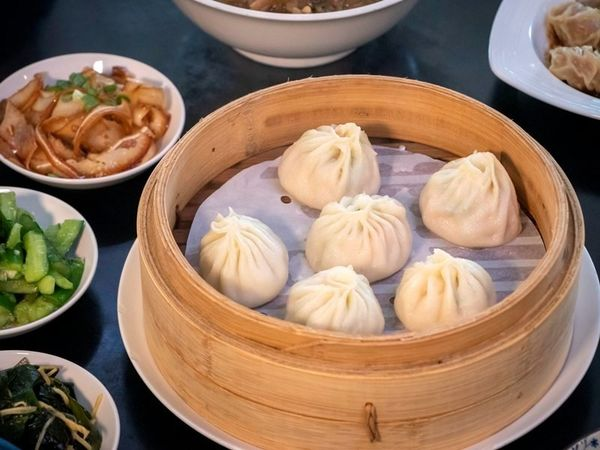
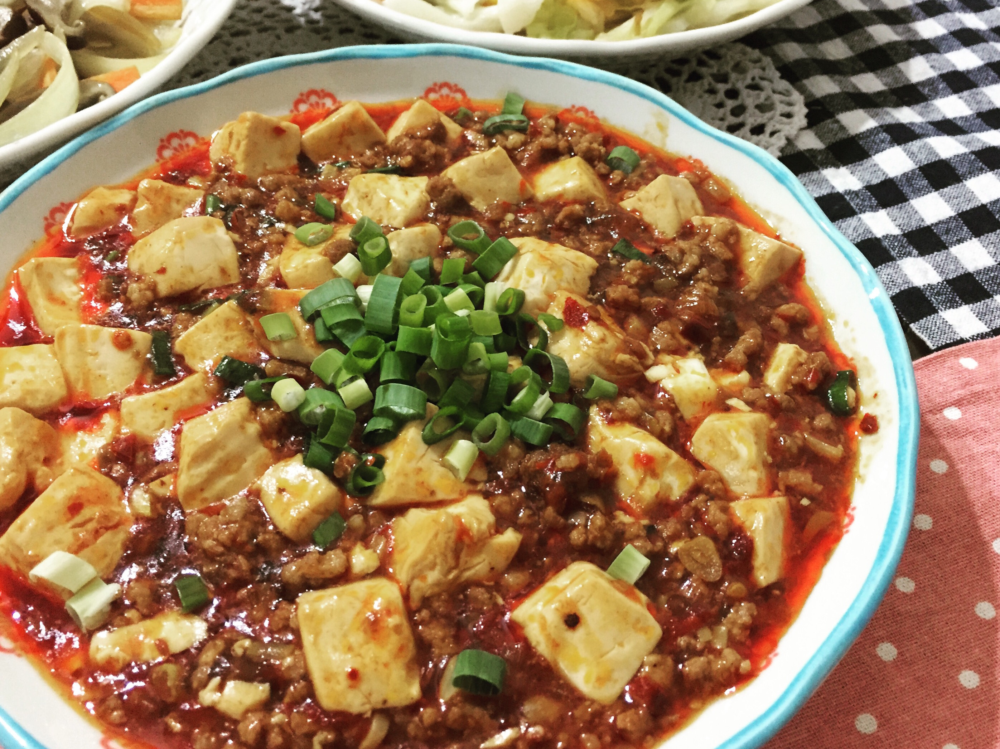
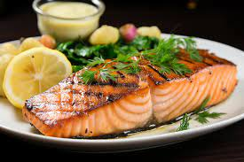

文字+圖片練習 學號:000000000 姓名:朱晉德
料理陳列展示
|  |
 |
 |
 |
| 小籠湯包 |
爆漿餡餅 |
麻婆豆腐 |
檸檬鮭魚 |
湯包
準備材料
A:麵皮
B:內餡A
- 絞肉200公克
- 胡椒粉5公克
- 香油20公克
- 鹽10公克
- 細砂糖10公克
C:內餡B
- 雞腳高湯100公克
準備材料
| A:麵皮 |
冷水150公克 |
中筋麵粉350公克 |
鹽5公克 |
|
|
| B:內餡A |
絞肉200公克 |
胡椒粉5公克 |
香油20公克 |
鹽10公克 |
細砂糖10公 |
| C:內餡B |
雞腳高湯100公克4 |
5 |
6 |
|
|
準備在鍋中放入蒸籠架，倒入200cc的水，
依序放好小籠湯包，再蓋上鍋蓋，
開大火蒸5分鐘，再轉中火蒸5分鐘，
香味飄出後，先試吃，看看皮有沒有熟，
小籠湯包麵皮一定要熟，QQ的才好吃！
餡餅
準備材料
A:食材
- 溫水麵糰500公克
- 豬絞肉300公克
- 薑8公克
- 蔥120公克
B:調味料
- 鹽1/2茶匙
- 醬油2茶匙
- 紹興酒1大匙
- 白胡椒粉1茶匙
- 香油
豬肉餡餅是許多人上麵食館都喜歡品嚐的經典美食，
隨著現在在家動手做料理風氣正夯，想到自己做出鮮美可口的餡餅料理，
享受烹飪後的成就感，不免讓人躍躍欲試。該如何做出飽滿多汁的餡餅呢？
本文將分享簡單易成功的餡餅料理作法，備好食材、按部就班，掌握爆汁秘訣，
你也能輕鬆在家包出一顆顆香氣四溢的美味餡餅。